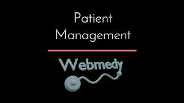

In The News
Rockford University ranked in Top 50 world universities by QX Rankings for graduate employability
- 
RockFord Filmaking trainig videos

Alumni of the month
Raj Shah graduated from Communication Science in 2005, He was an active student, being a writer and eventually the editor in chief of our very own Medium Magazine during 2003Upcoming Events
- Nov 1: Soccer Tournament
- Nov 3: Phoenix Act
- Nov 5: Art Show
- Nov 7: Sculpture Class
- Nov 10: Filmaking Seminar Talk
- Nov 13: Health and Heal
- Nov 17:Videography Seminar
- Nov 23:Leadership Talk by Mr.steve
- Nov 26:Alumni Meet